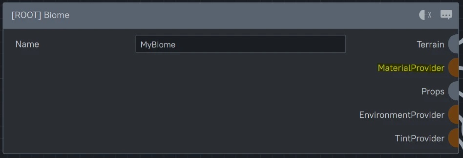
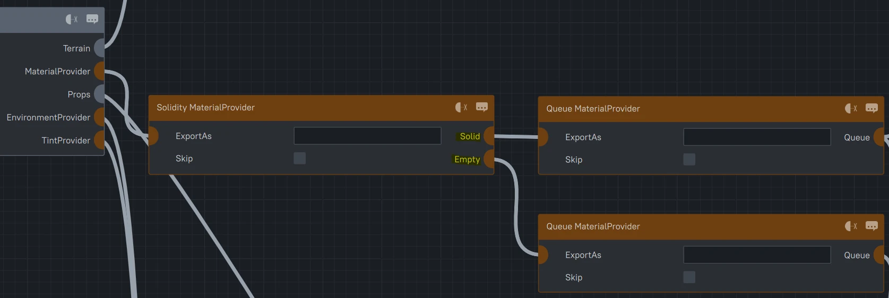
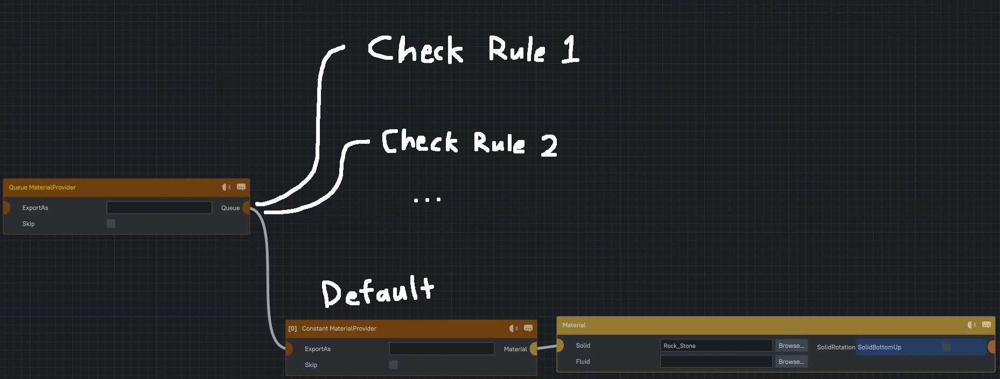
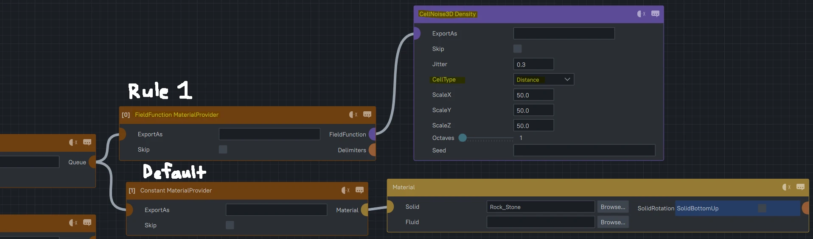
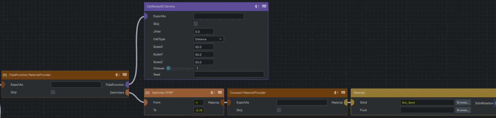
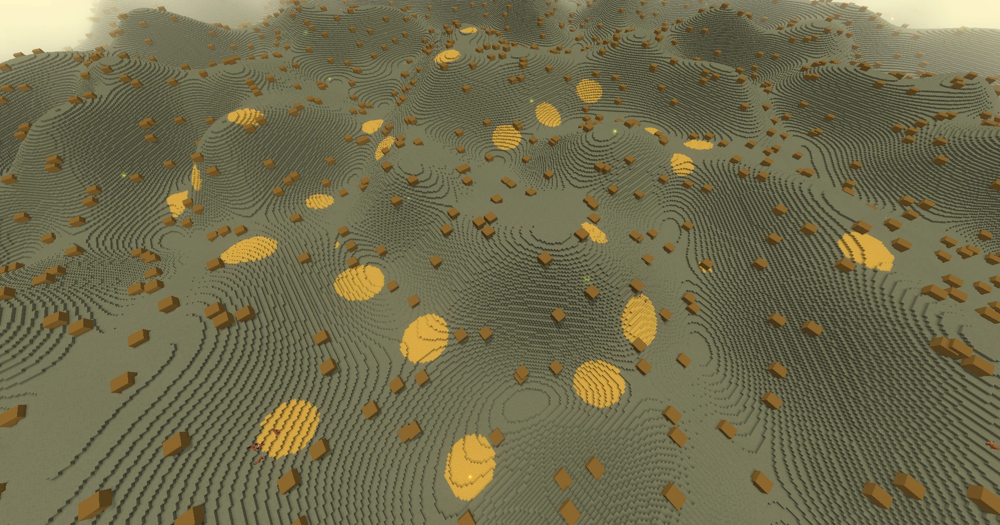
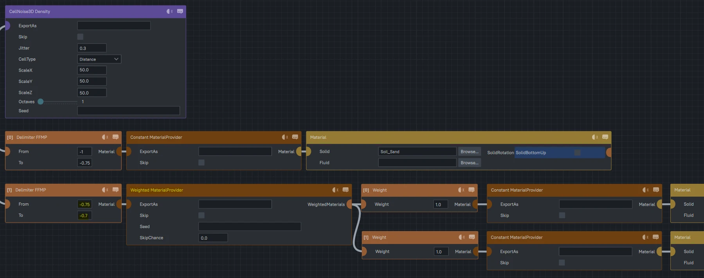
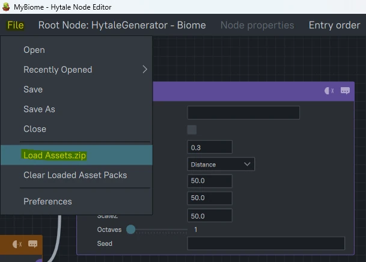
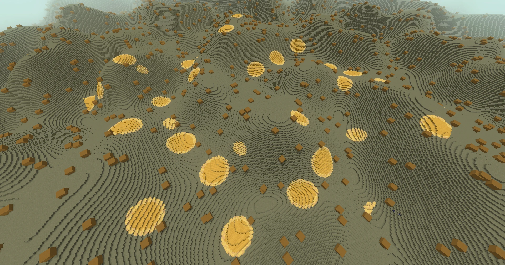

Materials is a fancy way of saying what block goes where! This is controlled via the 'MaterialProvider' pin on Biome nodes!
Each Biome can then define it's own Materials to place within the World.

Well, hold on... Doesn't the Density help control what block goes where? It defines what should be Air and what should be Blocks?
It still does, however, the Density you created is actually fed into this 'Solidity MaterialProvider' node. Anything above 0 will follow the 'Solid' pin
and anything equal to or below 0 will follow the 'Empty' pin.

Each of these goes into a Material Queue which works top to bottom in the Node Graph seeing which MaterialProvider rule fits the Block's Position first.
Once a rule passes, the Block will be set and will skip over any other MaterialProviders in the Queue.

Let's test this by creating pockets of Sand within our Stone! To do this, let's add a FieldFunction MaterialProvider before the Constant MaterialProvider to
attempt to place Sand before landing on Stone. You may notice, you can plug in a new Density into the 'FieldFunction' pin so let's add a 'CellNoise3D.'
'CellNoise3D' is a density that creates features that look like dots which is exactly what we're going for!
It's alright if you've never used Cell Noise before. For now, we'll set the 'CellType' to 'Distance' which will give us a range of values from [-1, 0].

Now adding the delimiter, you may get a picture of what's happening here. If the CellNoise Density at a Block's Position is within this Delimiter's range,
it'll place a new Material, and if not, the queue continues and Stone is placed! So let's create a reasonable delimiter here,
-1 is at the center of the dots and 1 is the furthest distance from the dot, so let's try -1 to -0.75 to have Sand at the center of the dots!
From here, we can define Material Providers in Material Providers?? Oh boy, we have a lot of power with this tool, but for now let's
just set the blocks within this range to a 'Constant' Sand block. The id of Sand Blocks being Soil_Sand.

After refreshing... We have Sand!

Now let's get a bit creative and add a ring around the Sand full of White Sand and White Sandstone!
You may think we add another FieldFunction with the same Density, different Delimiter, however, we can add as many Delimiters to the first one as we so please!
So let's add another one continuing from -0.75 to -0.7. Now we can place a 'Weighted MaterialProvider' and put an equal Weight between 2 'Constant MaterialProviders.'

Before we add the id's, it's a bit tedious going back and forth to check for Block Ids especially if they're long ones, so let's link the Node Editor to
the Assets.zip file! The Node Editor will read the Assets.zip and extract all of the Block info so we can then 'Browse...' for the correct Block!
To do this, select 'File' in the top right and then 'Load Assets.zip.' This will open up a file explorer where you can then traverse to Hytale's install
folder and select the Assets.zip file!

Going back, let's hit 'Browse...' and search for the White Sand and White Sandstone. Now, if we hit save and go back, we'll see our updated materials!

One last useful tip for those colorful extraordinaires! Hytale has an in-game Palette Menu where it'll give you Blocks that best match a Color,
give you a Gradient between 2 or more Blocks, and also save Block Palettes that you'd like to use for later!
To access, simply go into your Creative Inventory, select the Bulletted List icon on the right of the screen and at the bottom select,
'OPEN PALETTE EDITOR' and Ta-Da, colorful blocks at your disposal!